Agent-centric-real-to-sim · 归档于 2026-11-05
VPTwin
VPTwin: Real-Sim-Real Video Prediction for Robotic Manipulation Planning
归档到 Agent-centric real-to-sim：VLM 从真实 demo 写出可执行的 Isaac Sim twin，再用 twin 锚定 video prediction；第二相关 Robotic harness（VLM 提案、VLM 判决的 planner）。论文没有项目页，代码待公开（App G）。
TL;DR
- Problem
- 只看历史帧和动作的 video predictor 长程会丢手臂、吞物体；只在 sim 里判的 planner 又被接触和摩擦的 sim-real gap 骗过。
- Idea
- GPT-6 Astra 写一个近似 Isaac Sim twin，同一段动作跑 10 组随机物理，把这 10 段 sim 视频当 predictor 的上下文；planner 要 sim 和预测视频都通过才上真机。
- Result
- full-episode PSNR 25.64 → 28.96 dB（VLM-authored，Table 1）；真机抽屉 5/5 vs SIMPACT 2/5，Grasp Cup 3/7 vs 2/7，critic precision 1.00 vs 0.67 / 0.33（Table 2）。
Problem
只看帧和动作的预测器会丢手臂吞物体；只看 sim 的判决会放过真机上抓不到的动作
Running example · 后面每个 stage 都跟着它走
Open and Close Drawer（六个任务之一，两个真机任务之一）：白色抽屉固定在桌面中心 slot，前面一个黄色把手；双臂 ALOHA（AgileX Piper），一个固定第三视角相机。输入 真实首帧 I₀ + 14-D 关节动作，视频 128×128，15 Hz → 想要：(1) 候选动作下"真实画面会变成什么样"的预测视频；(2) 一条把抽屉拉开再推回的 14-D 轨迹，通不过检查就不上真机。
抽屉上 VPTwin 没拒绝过任何 plan，所以"拒绝"这条路由同一张桌上的 Grasp Cup 补上。
flowchart LR IN["例子输入
抽屉 I₀
+ 14-D 动作"]:::example IN --> A1["Action-only 预测
IWS：历史帧 + 动作"] A1 --> AX["抽屉右半消失
PSNR 23.26 dB"]:::gap IN --> B1["Sim-only planner
SIMPACT：只看 seed-0"] B1 --> BX["没抓到把手，sim 却放行
2/5，precision 0.67"]:::gap IN --> C1["Open-loop VLA
π0.5 直接出动作"] C1 --> CX["全部失败
0/5"]:::gap IN --> D1["Success-only 预测
只见过成功演示"] D1 --> DX["失败动作下抽屉消失
PSNR 20.25 dB"]:::gap
数字：23.26 是 VLM-authored 抽屉家族的均值（Table 14）；2/5、0/5、0.67 来自 Table 2；20.25 是失败 episode 从首帧起的全程分（Table 3）。"坏在哪"：第 1、4 条是 Fig. 3、Fig. 5 的标注；第 2 条的现象来自 Fig. 4 的一次 trial，"放行"来自 §4.3 的 false acceptance；第 3 条论文只报告结果，没分析原因。
根本问题：历史帧和动作解不出摩擦、质量这类未观测量；sim 有物理却有 gap；演示数据里又没有失败。 这篇的切入点：不去把 twin 估准，只要一个近似 twin，把它在同一动作下的多条 rollout 当 predictor 的上下文，再让 sim 和预测视频同时把关。
Related work
| 相关工作 | 解决什么 | 怎么解决 | 和本文的区别 |
|---|---|---|---|
| 同一问题 · 别的解法 | |||
| Action-conditioned video prediction UniPi、AVDC、iVideoGPT、IRASim、Ctrl-World、DreamDojo、IWS | 把视频预测当视觉 world model | 从演示数据学"动作 → 未来帧" | 历史帧和动作解不出未观测物理 → 本文再喂 sim rollouts（本文就属于这一族，架构沿用 IWS） |
| Planning inside digital twins Prompting-with-the-Future、SIMPACT | 为操作任务选轨迹或符号计划 | 全程在 twin 里优化和判断 | 判决只看 sim，gap 漏过去 → 本文加一道真实域预测视频的判决 |
| Sim-guided video ReBot、RoboTransfer、CRAFT、AnchorDream、RealWonder | 可控地合成机器人视频 | sim 回放，或用 sim 的几何 / 运动先验引导 diffusion | 不用"同一动作的多条随机 rollout" → 本文把它们当多假设物理先验 |
| Residual dynamics PGRD | sim 和真实的动力学差异 | 在模拟轨迹上学残差修正 | 修正 sim 轨迹本身 → 本文不改 sim，由 predictor 在 rollout 集合和真实帧之间协调 |
| 相似做法 · 别的问题 | |||
| Real-to-sim 重建 URDFormer、Holodeck、Articulate-Anything、RoboSnap、SceneSmith；coding agent：Articraft、Neoworld-pro | 视觉 → 可交互的仿真资产和场景 | 重建 rigid / soft / articulated 资产，LLM agent 写 URDF | 追几何和运动学保真、物理给单点估计 → 本文让 VLM 给参数分布，twin 只为产 rollout 服务 |
来源：论文 §1、§2 Related Work、§4.1；未另行检索。
Level 1 · Big picture
近似 twin 产出 sim 视频 → predictor 把它变成真实域未来 → sim 和预测视频一起否决动作
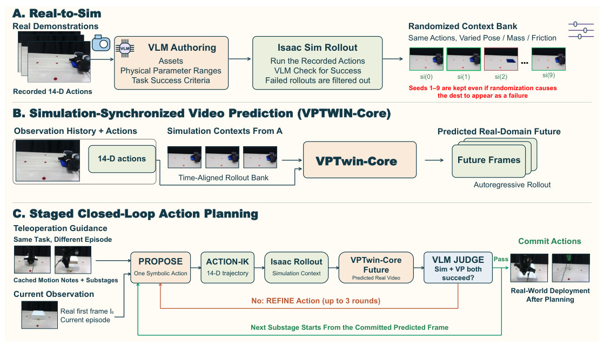
怎么读这张图
- A 左 "Real Demonstrations / Recorded 14-D Actions"：真实演示和录下的双臂关节动作。抽屉例子：一条开合抽屉的 teleop 录像。
- A 中 "VLM Authoring"：VLM 写三样东西：Assets、Physical Parameter Ranges、Task Success Criteria。注意是 ranges，不是单值。
- A 中 "Isaac Sim Rollout"：用录下的动作跑 twin，VLM 看结果，失败的 rollout 被过滤掉（Stage 2）。
- A 右 "Randomized Context Bank"：si(0)…si(9) 是同一动作、不同位姿 / 质量 / 摩擦的 10 段 sim 视频。论文把这种视频叫 dest。红框 si(2) 看起来失败了，也保留："Seeds 1–9 are kept"。
- B：观测历史 + 14-D 动作 + 时间对齐的 rollout 库 → VPTwin-Core → 自回归地出真实域未来帧（Stage 4）。
- C：PROPOSE → ACTION-IK → Isaac Rollout → VPTwin-Core Future → VLM JUDGE；没过走红线 REFINE（最多 3 轮），过了走绿线进下一 substage，全部过了才上真机（Stage 5）。
flowchart LR I["Input
抽屉 demo + I₀"] --> M["Twin ×10 → VPTwin-Core
PSNR 23.26 → 27.48 dB"]:::win M --> O["sim 和视频都过才执行
真机 5/5"]
Level 2 · Stages
5 个 stage：1–4 离线准备，5 在线规划
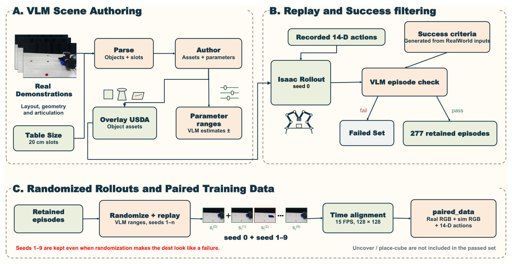
怎么读这张图
- A "VLM Scene Authoring"：Real Demonstrations 和 Table Size（20 cm slots）进 Parse（Objects + slots），再进 Author（Assets + parameters），出 Overlay USDA 和 Parameter ranges（"VLM estimates ±"）。
- B "Replay and Success filtering"：Recorded 14-D actions 在 seed 0 上跑，"VLM episode check" 按文字 Success criteria 判，分成 Failed Set 和 277 retained episodes。
- C "Randomized Rollouts and Paired Training Data"：retained 的 episode 跑 seed 0 + seed 1–9，对齐到 15 FPS、128×128，配成 Real RGB + sim RGB + 14-D actions。右下角灰字：Uncover / place-cube 不在通过集里。
flowchart TD S1["1 · Twin authoring
抽屉 USD，travel 15.5 cm"] --> S2["2 · Filter + rollouts
86 个抽屉 episode × 10"] S2 --> S3["3 · Failure synthesis
43 never-open
43 fail-close"] S2 --> S4["4 · VPTwin-Core
PSNR 23.26 → 27.48"] S3 --> S4 S4 --> S5["5 · Staged planner
6 substages，真机 5/5"] click S1 href "#stage-1" click S2 href "#stage-2" click S3 href "#stage-3" click S4 href "#stage-4" click S5 href "#stage-5"
点击 stage 展开 Level 3 细节。twin 到底和真实 episode 对上了什么、比只做 video prediction 多给了什么，见 横跨 stage 的账。
Level 3 · Details
每个 stage 的细节
Stage 1 Twin authoring 真实 stills + 桌面尺寸 → USD 资产 + 参数范围 + 文字 success
- Why：手写每个任务的 twin 太贵；未观测物理量又估不准，所以写范围，不写点估计（§3.1）。
- How：GPT-6 Astra 调两次（App B.3）：Parse 输出
scene_parse.json，Author 写 Python，本地执行出 USD。 - 输入：0% 布局图 + 20/40/60/70/80/100% 的第三视角 stills；prompt 给出桌面尺寸和 5 点 20 cm 网格。
- Parse 的字段（App G）：每个物体的
parts.motion（stays_put、translates_in_plane、lifts_off…）、softbody（none、thin_shell、folded_pack）、relations（on、covered_by、inside…），每张图的visible和present。 - 粒度：一次 prompt 收 24 张布局图（Image 01..24）。论文说 "examines 24 initial-layout variants"，VLM 集用其中 14 个（5 wipe、5 绿杯 grasp、3 pickup、1 drawer）。所以资产按物体共用，不是每条 episode 各写一个（我的推断；摘要写的是 "from a real demonstration episode"）。
| twin 的内容 | 谁写 | 来源 |
|---|---|---|
| 物体、遮挡、部件运动、软体类型 | GPT-6 Astra（Parse） | §3.1、App G |
| 初始位置：5 个 slot 里选 1 个，host 换算成米 | GPT-6 Astra | App B.3 |
| 几何、collision、质量、摩擦、articulation、采样范围 | GPT-6 Astra（Author） | App B.3、Table 7 |
| 抽屉改成 fixed-base + prismatic joint；cloth 和 towel 改成 PhysX surface deformable | coding agent（Cursor Grok 4.6） | §3.1、App B.3 |
| 任务文字和 success 段落，每个 task family 一份 | GPT-6 Astra | App B.3、Table 9 |
| 桌面 mesh、相机标定、机器人几何 | 人给定，VLM 版同样需要 | App B.1 |
| 回放用的 14-D 动作 | 录制的，不改 | §3.1 |
- 对照组 measured-catalog：548 条 episode、6 个 family，物体几何由人核对；但质量、摩擦和范围由 coding agent 给，"not physically measured"（App B.1）。
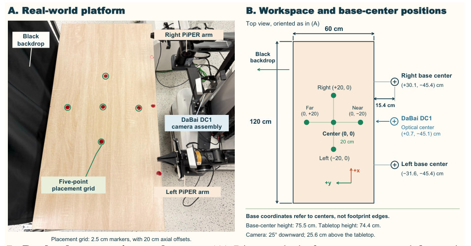
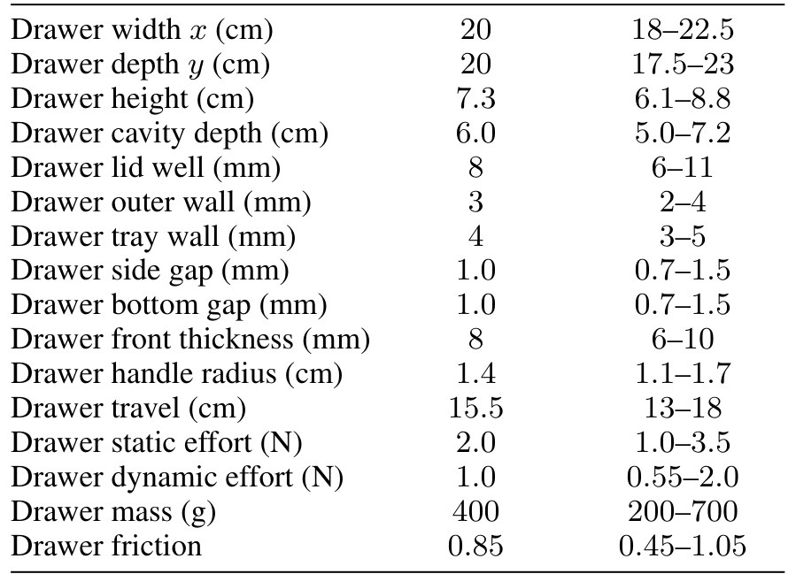
flowchart TD a["Stills + 网格
0…100%，5 个 slot"] --> b["Parse
抽屉 + 把手，slot = center"] b --> c["Author
Python → USD + 范围"] c --> d["Coding agent
fixed-base + prismatic"]
Running example 在这一步
VLM 写出 20 × 20 × 7.3 cm，cavity 6.0 cm，travel 15.5 cm（人核对的版本是 20 × 20 × 7 cm，travel 15 cm，Table 5）；物理给范围：static effort 1.0–3.5 N，质量 200–700 g，friction 0.45–1.05（Table 7）。抽屉占 center slot。
Stage 2 Success filter + randomized rollouts 资产 + 录制动作 → 277 条 episode，各配 10 段对齐的 sim 视频
- Why：只让演得通的 twin 当 prior；又不让 predictor 绑死一个物理设定。
- Filter：录制动作在 seed 0 上回放，VLM 看 seed-0 的 0/50/100% stills，对照 Table 9 的文字判定；grasp 再看 60/70/75/80%（App B.3）。
- 留下 277 条：wipe 78、grasp 32、pickup 81、drawer 86（由 Table 8 三列相加）。这不是通过率：Remove Cloth、Place Cube 整个 family 不在 VLM 集里，布局也只用 14 / 24，论文没报告 filter 的通过率。
- Randomize：seed 1–9 动作不变，物体沿一个方向平移 1–5 mm，参数在 Table 7 范围内均匀采样，部分几何尺寸也变（App B.2）；桌、相机、灯、机器人不变。
- 对齐：15 Hz、128×128，真实 RGB、10 段 sim RGB、14-D 动作用同一时间索引（Fig. 8C、App D.3）。
- 保留"假失败"：seed 1–9 就算看起来失败了也留着（Fig. 1A 红字），这是 E5 实验的来源。
flowchart TD a["Seed 0 回放
录制的 14-D 动作"] --> b["VLM episode check
0 / 50 / 100% stills"] b -->|fail| x["Failed Set"]:::gap b -->|pass| c["Seeds 1–9
friction、质量、1–5 mm"] c --> d["配对数据
real + 10 段 sim + 动作"]
Running example 在这一步
VLM 按 "visible opening … returns the drawer front to its closed position"（Table 9）判 seed 0 的三张图；86 条抽屉 episode 留下（70 / 8 / 8 分 train / val / test，Table 8），每条再跑 9 组抽屉参数。
Stage 3 Counterfactual failure synthesis 成功 episode → 扰动动作 → 118 条 sim 失败 episode
- Why：真实数据集里没有失败视频（App C），predictor 容易把有毛病的动作也画成成功。
- 数量：118 = 32 grasp + 43 drawer never-open + 43 drawer fail-close（App C）。
- 从哪改：grasp 和 never-open 从第一次开爪前 5 帧开始；fail-close 从松手后 5 帧开始。
- 怎么改：笛卡尔位移方向有偏，幅度乘 U(0.75, 1.25)，再叠 U(2, 6) cm 的 wandering；夹爪指令反转 / 保持开 / 保持闭 / 周期切换，概率 0.25 / 0.20 / 0.20 / 0.35；最后 clip 到 URDF 限位。
- 贴标签看物体轨迹，不看扰动大小：grasp 成功 = 抬起 ≥ 5 cm、回桌面、直立、末 8 帧稳定；drawer 成功 = 拉开 ≥ 8 cm 再合到 3 cm 内。这里是数值判定，不是 VLM。
- 监督：seed-0 的 sim 画面当伪观测目标；seed 1–10 当 conditioning，seed 0 不进条件（App C）。
flowchart TD a["成功动作
开合抽屉"] --> b["扰动关键阶段
夹爪 toggle、偏移"] b --> c["Isaac 回放
seed 0 + seeds 1–10"] c --> d["按物体轨迹贴标
开度 < 8 cm = never-open"]
Running example 在这一步
86 条抽屉 episode 各派生一条失败：43 条 never-open（抽屉没拉开），43 条 fail-close（拉开了但没合上）。训练时目标画面是 sim 渲染，所以 Fig. 5 的 GT 行是 Simulation。
Stage 4 VPTwin-Core 真实历史帧 + 动作窗口 + 10 段 sim 窗口 → 下一帧真实域预测
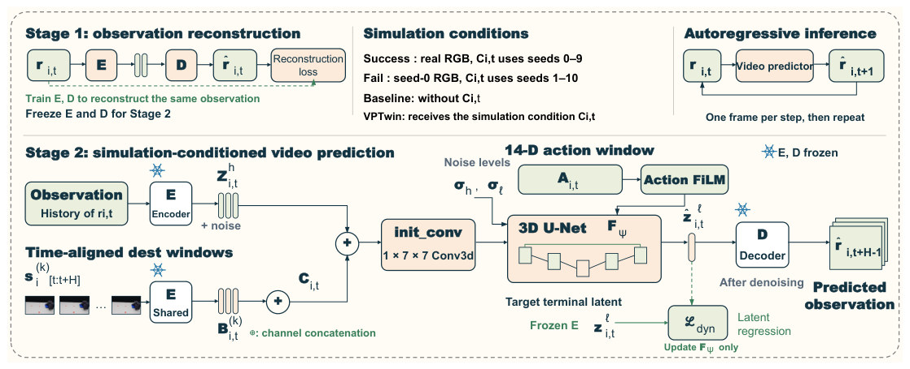
图里的符号
| 符号 | 白话 | 在抽屉例子里 |
|---|---|---|
| ri,t | 第 i 条 episode 在 t 时刻的相机帧 | 128×128 的抽屉画面 |
| Ai,t | 从 t 起一段时间窗的 14-D 关节动作 | 10 步双臂动作 |
| H | 时间窗长度 | 10 帧 |
| si(k)[t:t+H] | 第 k 条 sim rollout（dest）的同一时间窗 | 第 k 组抽屉参数下的 10 帧 |
| E，D | 逐帧 encoder；把 latent 还原成图的 consistency decoder | 训练完第一阶段就冻结 |
| Bi,t(k) | 这段 sim 窗口经 E 编码后的 latent | 10 段，每条 rollout 一段 |
| Ci,t | 10 段 latent 按 channel 拼成的 sim 条件 | 成功 episode 用 seed 0–9，失败用 seed 1–10 |
| Zi,th | 真实窗口的加噪 latent：前 H−1 格是轻噪历史，末格待预测 | 前 9 帧 + 1 个待预测位 |
| σh，σℓ | 末格的输入噪声和目标噪声 | 推理时 999 → 0 一步 |
| zi,tℓ，ẑi,tℓ | 窗口末帧的目标 latent 和预测 latent | 第 10 帧 |
| Fψ | 唯一要训练的 3D U-Net 动力学模型 | 只更新它 |
| Ldyn | 预测 latent 和目标 latent 的均方误差 | 实际只监督末帧（App D.4） |
怎么读这张图
- 左上 "Stage 1: observation reconstruction"：先训练 encoder 和 decoder（E、D）把一帧重建回来，然后冻结。失败训练时也重建 seed-0 sim 帧（App D.2）。
- 中上 "Simulation conditions"：四种情况。成功：目标是真实 RGB，条件 seed 0–9。失败：目标是 seed-0 RGB，条件 seed 1–10。Baseline：没有 sim 条件（C）。VPTwin：有。
- 下左 "Observation" 和 "Time-aligned dest windows"：真实历史和 sim 窗口都过同一个 E；sim 窗口拼成 sim 条件（C），再和真实历史的加噪 latent（Z）在 channel 上拼成一个输入。
- 下中 "init_conv" 和 "3D U-Net"：sim 只在第一层卷积进入；动作窗口（A）通过 "Action FiLM" 调制中间特征。
- 下右：预测的末帧 latent 由 D 解码成画面；损失 Ldyn 只更新 U-Net。
- 右上 "Autoregressive inference"："One frame per step, then repeat"：每步出一帧，窗口滑动。
- 关键：sim 只是输入条件，不是目标。成功 episode 的目标仍是真实帧，所以模型学的是"看着 sim 猜真实"。
- Baseline 的公平性：Table 1 写 IWS，Table 14 写 "action-only VPTwin"：同优化器、batch、步数、冻结的 autoencoder、split、动作窗，只去掉 C（App D.1）。
- 训练：AdamW，lr 8×10⁻⁵，batch 1，每阶段 1,000,005 步，FP32；每个 task family 单独训一个模型，5 个训练 seed（App D.1）。
- 推理：新一格标准高斯，Fψ 一步去噪（999 → 0），D 三步解码（999 → 666 → 333 → 0）（App D.5）。
Running example 在这一步
只给 I₀ 和动作时，抽屉右半消失（Fig. 3 "Right Side Lost"）；加上 10 段 sim 视频，抽屉家族 PSNR 23.26 → 27.48 dB（VLM-authored，Table 14）。
Stage 5 Staged Real-Sim-Real planner I₀ + 训练集演示 → 一条完整 14-D 轨迹，或拒绝执行
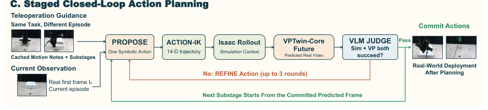
- Why：整段技能一次搜索会累积错误；模仿 demo 的结构，把技能切成 6 段逐段验。
- 缓存（每个 task family 一次）：VLM 读训练集 teleop stills，每条 21 帧（0%、5%…100%），grasp 5 条、drawer 3 条。第一遍写 motion note（路径规则、爪子时序、接触），第二遍切成 J = 6 个 substage，每段有允许的 primitive 和本地 success 测试（App E）。
- Reconstruct：从 I₀ 认 task family 和 slot，只做一次；论文没提测试时重写资产。
- Propose：看当前图、对应 slot 的 21 帧 teleop 条、一帧 seed-0 Isaac 画面，写一段符号动作；米制数字来自 slot，第一段之后来自 Isaac 状态。
- Action-IK：Piper DH 逆运动学 + 2 cm 线性插值。
- Judge：看预测 stills（0/20/40/60/80/100%）和 seed-0 Isaac（0/50/100%），不看 teleop。"A physics miss in Isaac … fails the substage even if the prediction looks successful"，两者都要过。
- Refine：用失败的预测和 Isaac stills、裁到本段的 teleop、失败历史改写动作；初次 + 最多 3 轮。
- Commit：末帧预测图 + seed-0 模拟器状态交给下一段；任何一段 4 次都没过，直接终止，不上硬件。
- 执行：6 段全过后，整条轨迹一次发给真机（Algorithm 1）。Fig. 1C 的 "Closed-Loop" 指规划环，真机执行时没有反馈（我的读法；论文把 "closed-loop online adaptation" 列为未来工作）。
flowchart TD P["Propose
一段符号动作"] --> K["Action-IK
14-D，2 cm 插值"] K --> R["Isaac + VPTwin-Core
seeds 0–9 → 预测视频"] R --> J["Judge
sim 和视频都要过"] J -->|没过| F["Refine ≤ 3 轮
失败 stills 回给 VLM"]:::gap F -->|改写动作| K J -->|都过| C["Commit
末帧 + seed-0 状态"]:::win C --> N["6 段全过
整条轨迹上真机"]
Running example 在这一步
抽屉 5 次 trial 全部通过 6 段检查，上真机 5/5。论文没有列出这 6 段的名字；Fig. 4 的列 Approach、Grasp、Pull Open、Close、Withdraw 是任务阶段。
换成 Grasp Cup：7 次里 4 次被拒绝。评估时被拒绝的 plan 也拿去执行（每段取 VLM 排得最接近成功的候选），4 次全部失败，所以 recall 和 precision 都是 1.00（App E）。
横跨 stage twin 的账：验证了什么，多给了什么 它和真实 episode 对上了哪些，哪些没对；比只做 video prediction 多出什么
twin 和 episode 之间的所有检查
| 检查 | 比的是什么 | 谁判 | 结果 |
|---|---|---|---|
| 初始放置 | 0% 图 vs 5 点网格，出离散 slot | VLM | 放置误差未测（App A.2） |
| 成功过滤 | seed-0 sim stills vs family 级文字 criterion | VLM | 留 277 条（App B.3） |
| catalog 版 | seed-0 回放由人接受，几何由人核对 | 人 | 548 条（App B.1） |
| 失败标签 | sim 物体轨迹 vs 阈值（5 cm、8 cm、3 cm） | 代码 | 118 条（App C） |
- 这是任务结局层面的语义检查。按论文描述，check 的输入是 sim stills 和文字，不含该 episode 的真实帧。
- 论文没有报告：sim 帧和真实帧的逐帧比较、物体位姿或轨迹误差、接触时刻对比、质量或摩擦的辨识。
- App A.2 自己说：sim 的放置扰动 "are not measured bounds on real-world placement error"。
比只做 video prediction 多给的四样
| twin 的用途 | 在哪 | 证据 | 隔离了吗 |
|---|---|---|---|
| sim 视频当 predictor 的上下文 | Stage 4 | +2.99 / +3.32 dB（Table 1） | 隔离：同架构只去掉 C |
| 失败样本：真实数据没有的监督 | Stage 3 | 抽屉全程 +0.97 dB（Table 3） | 隔离，但 GT 也是 sim |
| 物理否决：sim 没过就算预测好看也不行 | Stage 5 | 混在 Table 2 的整体结果里 | 没隔离 |
| 状态来源：第一段之后的米制坐标来自 Isaac | Stage 5 | 无单独结果 | 没隔离 |
- 规划上的缺口（我的推断）：论文没跑"只用视频判决"和"同一 planner 去掉视频判决"，所以 twin 和视频各自对 Table 2 贡献多少，不知道。
Recap：例子覆盖了论文的哪些 idea
| 论文里的 idea | 例子里在哪体现 |
|---|---|
| VLM 写可执行 twin | Stage 1：抽屉 USD，travel 15.5 cm，slot = center |
| Coding agent 修物理 | Stage 1：抽屉改成 fixed-base + prismatic joint |
| 参数分布，不是点估计 | Stage 1–2：static effort 1.0–3.5 N，seed 1–9 采样 |
| VLM success filtering | Stage 2：seed-0 三张图对照文字，86 条抽屉 episode 留下 |
| 时间对齐的 rollout 库 | Stage 2、4：10 段 sim 视频和真实帧同索引 |
| Counterfactual failure 共训 | Stage 3：43 never-open + 43 fail-close，E3 |
| VPTwin-Core | Stage 4：抽屉 PSNR 23.26 → 27.48 dB |
| Motion note 和 substage | Stage 5：3 条抽屉 teleop → 6 段 |
| Dual-domain Judge 和 Refine | Stage 5：抽屉 5/5；Grasp Cup 4 次拒绝，执行后全败 |
| 对 sim-real 结局不一致的鲁棒性 | E5：抽屉用失败 sim 上下文仍 +4.08 dB |
Results
视频质量稳定提升，真机假阳性归零；但样本小，增益大多一条 rollout 就拿到
顺序同论文：E1 sim 上下文让长视频预测更好吗 → E2 真机规划更成功吗 → E3 合成失败有用吗 → E4 要几条 rollout → E5 sim 结局错了怎么办。E1、E3–E5 比视频质量，E2 比真机成功率和 critic 准确率；论文不比时间。
E1sim 上下文让长程视频预测更好吗？§4.2 · Table 1 · Fig. 3 · Table 14
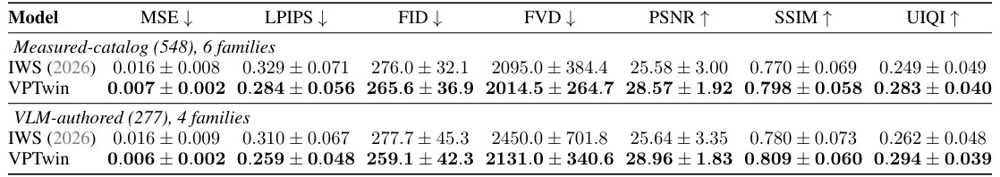
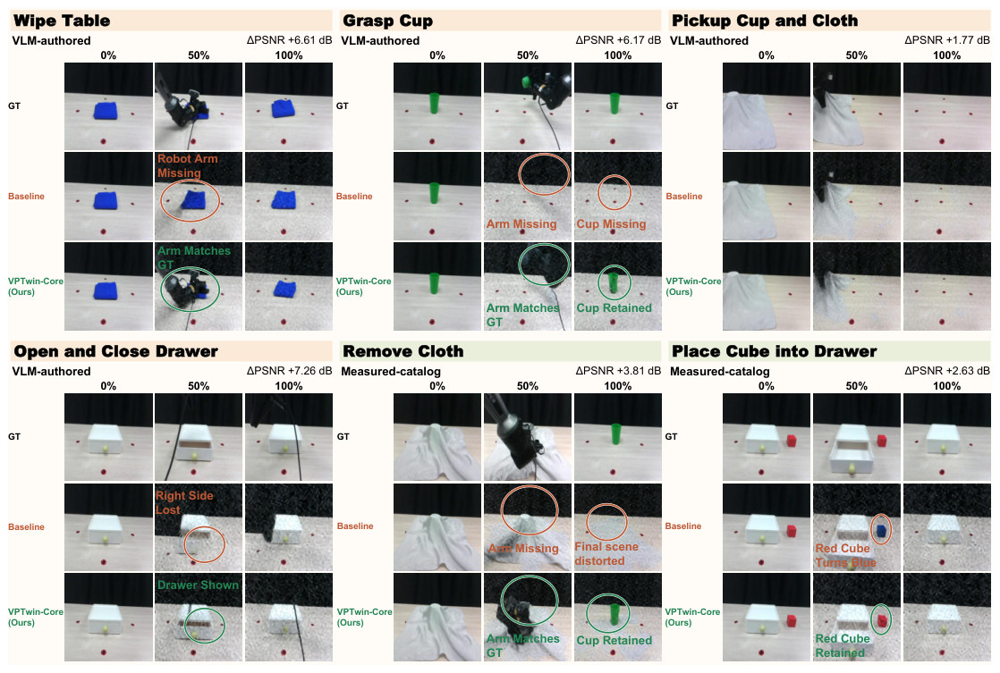
| Family | Catalog PSNR | Δ | n | VLM PSNR | Δ | n |
|---|---|---|---|---|---|---|
| Open and Close Drawer | 22.48 → 26.56 | +4.08 | 10 | 23.26 → 27.48 | +4.22 | 8 |
| Grasp Cup | 23.54 → 28.26 | +4.72 | 13 | 24.22 → 27.91 | +3.69 | 3 |
| Wipe Table | 26.25 → 28.93 | +2.68 | 10 | 24.47 → 28.91 | +4.44 | 8 |
| Place Cube into Drawer | 23.82 → 27.37 | +3.55 | 6 | — | — | — |
| Remove Cloth | 26.68 → 28.20 | +1.52 | 5 | — | — | — |
| Pickup Cup and Cloth | 30.73 → 32.11 | +1.38 | 10 | 30.60 → 31.56 | +0.96 | 8 |
由 Table 14 的 PSNR 列整理（原表过小），baseline → ours，Δ 是我算的，n 是测试 episode 数。Fig. 3 上的 ΔPSNR（抽屉 +7.26）大于这里的 family 均值，应是所示单条 episode（我的推断）。
- 说明什么
- 同架构加上 sim 条件，family 平均后的七项指标都更好。PSNR +2.99 / +3.32 dB，LPIPS 0.329 → 0.284、0.310 → 0.259。增益最大的是抽屉和杯子，最小的是盖布的 Pickup。逐 family 并非全胜：catalog 的 Pickup 和 Remove Cloth 的 FVD 变差（1689.7 → 1700.6，1633.7 → 1748.7），抽屉的 FID 略差（299.0 → 300.9）。
- 在故事里
- 回答 "twin 比只做 video prediction 多给了什么" 的主证据。
- 指标
- MSE、PSNR、SSIM、UIQI、LPIPS、FID、FVD，128×128 整条测试 episode；先对 5 个训练 seed 取平均，再对 family 取 mean ± std。
- 怎么评测
- 测试集 54 / 27 条 held-out episode（Table 8）；VLM 版 Grasp Cup 只有 3 条。
- 唯一 baseline 是同架构的 action-only 模型，没比 Cosmos 这类其他 world model。
- sim rollout 由测试 episode 自己的录制动作和 slot 驱动。
- VLM 版的测试集只含 seed-0 通过 filter 的 episode，twin 演砸的情况不在分数里（我的推断）。
- "physical hallucination" 没有直接计数，只有这些图像指标和 Fig. 3 的圈注。
- Fig. 3 里 baseline 丢手臂，而 sim 视频本身就画出了手臂：增益中多少来自机器人运动学、多少来自接触物理，论文没拆（我的推断，见 E5）。
E2真机上规划更成功、判决更可靠吗？§4.3 · Table 2 · Fig. 4 · App E
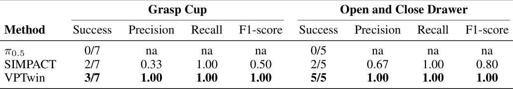
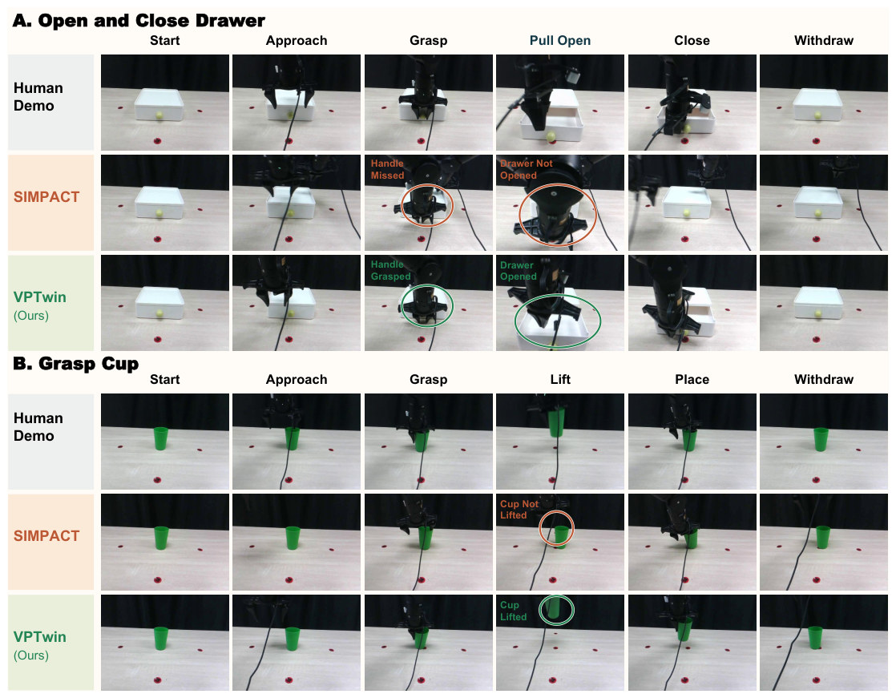
- 说明什么
- 成功率更高，假阳性归零。Grasp Cup 3/7 vs SIMPACT 2/7 vs π0.5 0/7；抽屉 5/5 vs 2/5 vs 0/5。SIMPACT 有 5 次 false acceptance（grasp 4、drawer 1），precision 0.33 / 0.67；VPTwin 都是 1.00。
- 在故事里
- 支撑 "sim-only 判决不够，要加真实域视频判决"。
- 指标
- Success = 真机成功次数。Precision = 被接受的 plan 里真成功的比例；Recall = 真成功的 plan 里被接受的比例。为了算这些，被拒绝的 plan 也拿去执行。
- 怎么评测
- Grasp Cup 7 次：center、center、far、near、near、left、right。抽屉 5 次：同一居中布局的不同照片（App A.3）。
- 每次从 I₀ 开始，执行提交好的整条 14-D 轨迹。
- SIMPACT：10 个整段 plan，最多 3 轮整段修改，只看 seed-0 sim stills；没有 teleop 引导，没有视频（App E）。两边都拿到 I₀、slot 米制坐标、指尖初始位置、primitive schema 和整段 success 文本。
- VPTwin 比 SIMPACT 多三样：teleop motion note、6 段切分、视频判决。没有消融把它们分开，所以成功率的提升不能全归给视频（我的推断）。
- 抽屉上 VPTwin 没拒绝过 plan，precision 1.00 不考验否决能力；全部拒绝证据是 Grasp Cup 的 4 次（由 Table 2 和 App E 推出）。
- 论文没说 π0.5 是否在这些演示上训练过，只说 open-loop。
- 12 次 trial，无置信区间；论文没报告单次规划的时间或 VLM 调用数。
E3合成失败能让 predictor 画出失败吗？§4.4 · Table 3 · Fig. 5 · Table 15
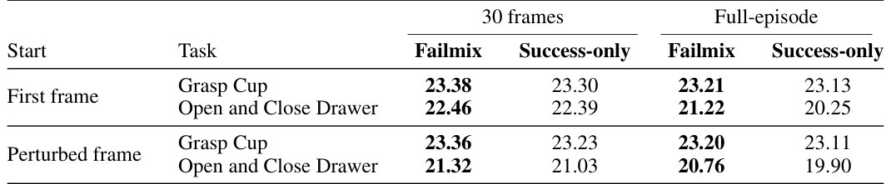
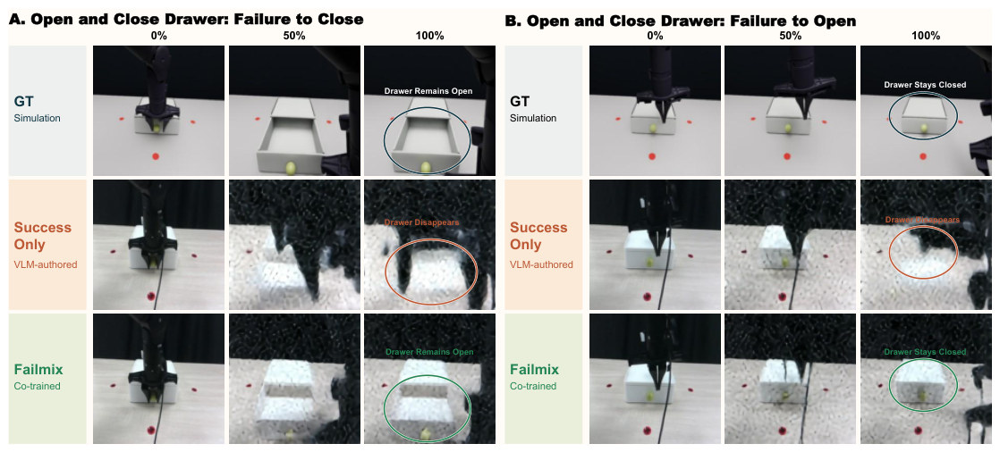
- 说明什么
- 抽屉上更忠实，杯子上几乎不变。抽屉全程 +0.97 dB（首帧起）、+0.86 dB（扰动帧起），30 帧前缀只有 +0.07、+0.29；Grasp Cup 全程 +0.08–0.09 dB。SSIM 同向（Table 15）。
- 在故事里
- planner 的 predictor 必须敢画失败，否则视频判决形同虚设。planner 用的就是这个 Failmix 模型（App D.7）。
- 指标
- 对 seed-0 模拟失败视频的 PSNR，30 帧前缀和全程两种；GT 是 sim，不是真实失败。
- 怎么评测
- Failmix：118 条真实成功 + 118 条 sim 失败，平衡采样；Success-only：277 条成功。
- 测试 11 对：3 grasp、8 drawer（App D.7）。
- 没有真实失败视频当 GT；没报告 Failmix 在真实成功 episode 上是否变差；没用 Success-only 模型跑规划，所以它对 E2 的贡献未知（我的推断）。
E4要多少条 rollout？§4.4 · Fig. 6(a,b) · Table 11 · Table 4
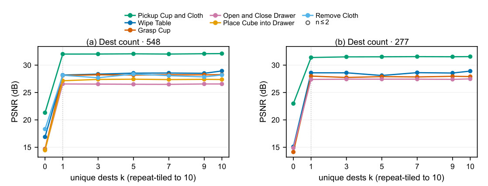
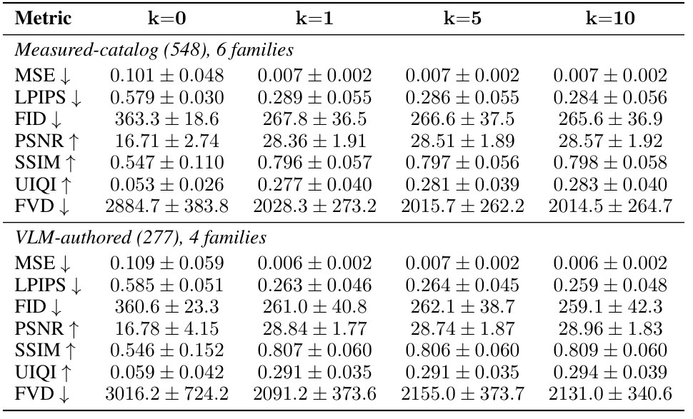
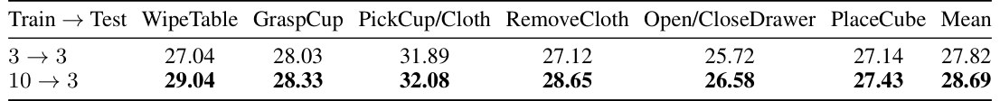
- 说明什么
- 测试时一条 rollout 就够，训练时多条有用。catalog 16.71 → 28.36 → 28.57 dB（k = 0 / 1 / 10），VLM 16.78 → 28.84 → 28.96 dB。训练用 10 条比 3 条高 0.87 dB（Table 4）。
- 在故事里
- 论文用 Table 4 守住 "multi-hypothesis" 的设计；但测试时的"多假设"几乎没带来增益。
- 指标
- 全测试集 PSNR；k ∈ {1,3,5,7,9} 平均 3 个评测 seed，k = 0 用 1 个，k = 10 复用完整结果（App F）。
- 怎么评测
- k = 0 是"带 sim 训练的模型喂全零"，16.71 dB 远低于 action-only 的 25.58 dB：它说明模型依赖 sim，不代表 sim 的价值。sim 的价值看 E1。
- seed 之间只差毫米级放置和物理参数，接触之前的画面很可能几乎一样，这可能是平线的原因（我的推断）。
E5sim 结局和真实相反时，预测会被带偏吗？§4.4 · Fig. 6(c,d) · Tables 12–13
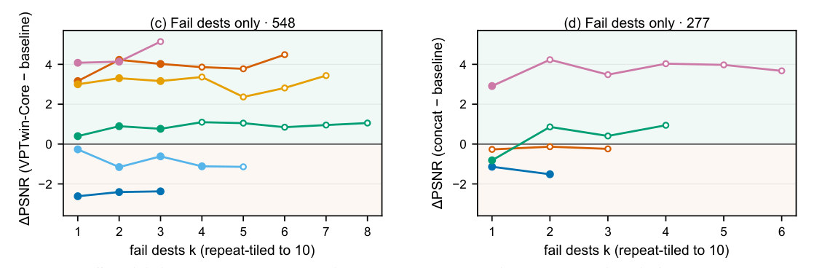
| Family | Catalog Δ（k=1） | n | VLM Δ（k=1） | n |
|---|---|---|---|---|
| Open and Close Drawer | +4.08 | 7 | +2.91 | 3 |
| Grasp Cup | +3.16 | 5 | −0.27 | 1 |
| Place Cube into Drawer | +3.00 | 4 | — | — |
| Pickup Cup and Cloth | +0.40 | 6 | −0.81 | 5 |
| Remove Cloth | −0.26 | 5 | — | — |
| Wipe Table | −2.62 | 9 | −1.14 | 6 |
由 Table 12、13 的 PSNR 行整理。§4.4 正文把 Grasp Cup 写成 3.1 dB，表里是 +3.16。
- 说明什么
- 刚体和抽屉上，错的结局也没带偏；布类上有害。catalog 抽屉 +4.08、Grasp Cup +3.16、Place Cube +3.00；Wipe Table −2.62。
- 在故事里
- 论文的解释：失败的 sim 仍提供几何和空间线索。这回应了 "twin 不准怎么办"。
- 指标
- concat − baseline 的 PSNR 差，同一批 episode；n 是 k = 1 时的 episode 数，即至少有一条失败 rollout 的 episode。
- 怎么评测
- catalog 的抽屉在这里的增益（+4.08，n = 7）和用全部 rollout 的 E1 增益（+4.08，n = 10）同量级，只是 episode 集不同。结局错了增益却还在，说明 PSNR 增益主要来自几何和运动学，不是物理结局（我的推断）。
- 缺一个关键对照：只渲染机器人、不含物体和物理的 sim 上下文（我的推断）。
- 失败 rollout 并不少见：catalog 的 n 对比 Table 10，Wipe 9/10、抽屉 7/10、Remove Cloth 5/5 的测试 episode 至少有一条。论文称 pipeline "suppresses such simulation false negatives"，但没给比率；seed 1–9 的失败怎么判定也没写。
Limits
局限和开放问题
论文自己说的（§5）
- twin 编写假定相机外参已标定，且按任务重建；open-world twin 是未来工作。
- 合成失败覆盖不了真实世界没建模的全部动力学。
- 更大的多阶段任务集和 closed-loop online adaptation 还没做。
我的推断
- twin 从未和真实帧逐帧比对；物理范围从未验证是否覆盖真值。
- planner 的提升没拆开：twin、视频判决、teleop 引导、substage 切分混在一起（E2）。
- "减少 physical hallucination" 没有直接度量；PSNR 也可能主要反映手臂和背景（E5）。
- 设定很窄：一个固定相机、一张桌、5 个 slot、128×128、每个 family 单独训练；每个 family 用 35–103 条同任务训练演示（Table 8）。
- 成本未报告：planner 最多 6 段 × 4 个候选，每个候选 10 条 rollout + 预测 + VLM 判决，耗时未知。
For Agent-centric real-to-sim
对我们有什么用
- assumed 的质量和摩擦：r2s-lite 也是假设值。VPTwin 不辨识，改成 VLM 给范围、10 个 seed 一起跑。可借的是用范围代替单值，看 verdict 在 seed 间稳不稳；但它没证明范围覆盖真值，Table 11 里测试时 k = 1 已接近 k = 10。
- twin 验证：它只让 VLM 拿 seed-0 stills 对照文字，比我们的 mask match 和 path 比对松得多。我们的两个弱点它都帮不上：相机固定且已标定，不碰 DROID 约 20 cm 的相机误差；success 文本也由 VLM 写，同样可能把物体角色写错（后一半是我的推断，论文没评估）。
- sim-to-real 证据：我们还没有。Table 2 的做法可以直接抄：被拒绝的 plan 也上真机，报告 critic 的 precision 和 recall。把我们的 replay 当 predictor 上下文则需要同相机、同任务的大量 episode，我们是一条 episode 一个场景，不能直接搬。